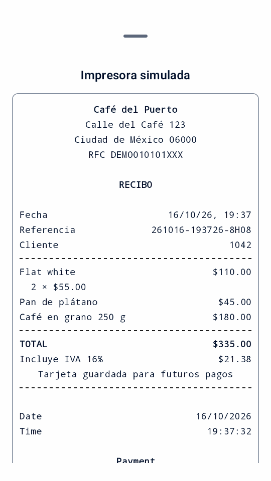
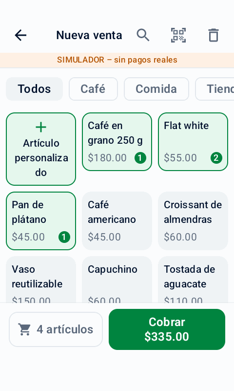
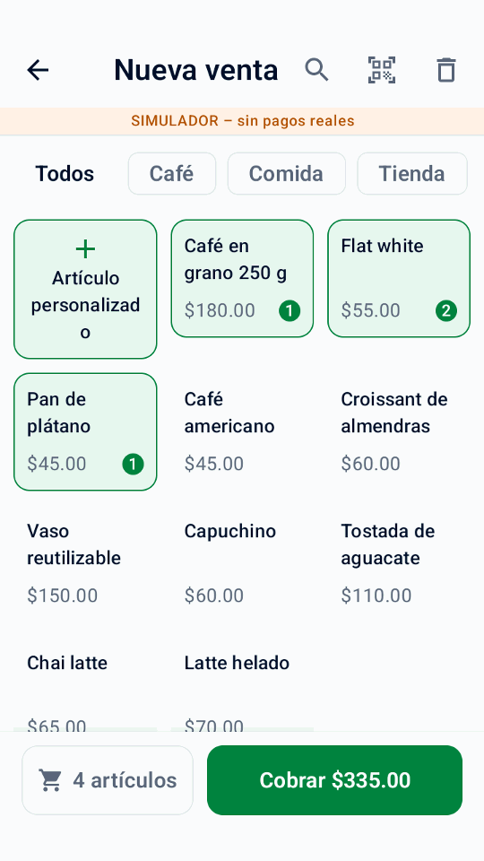
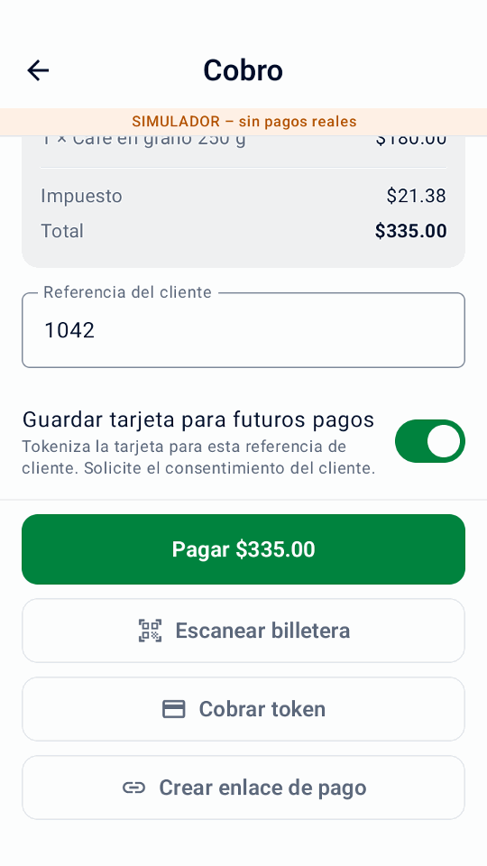
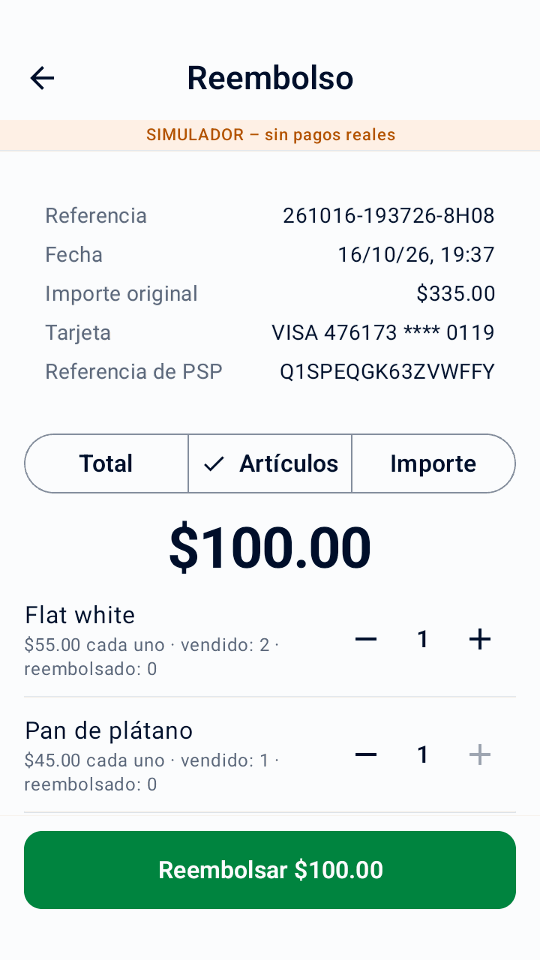
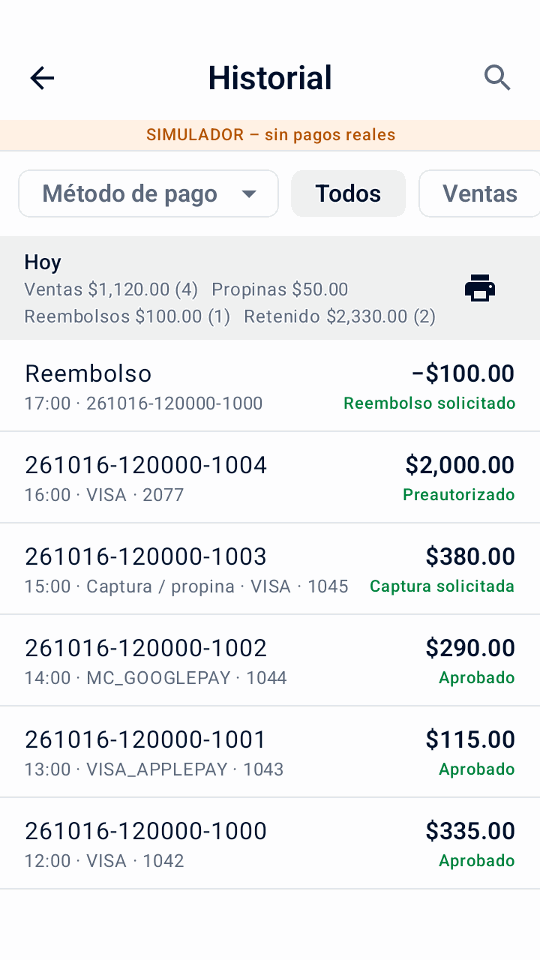
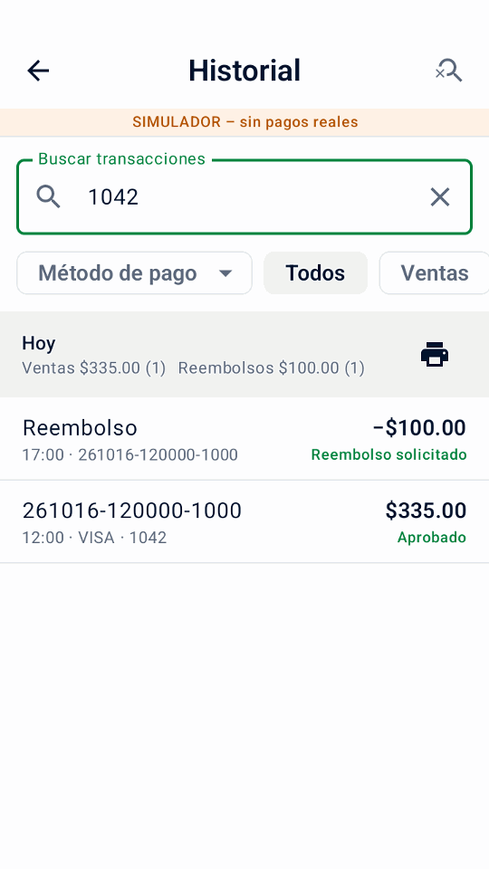
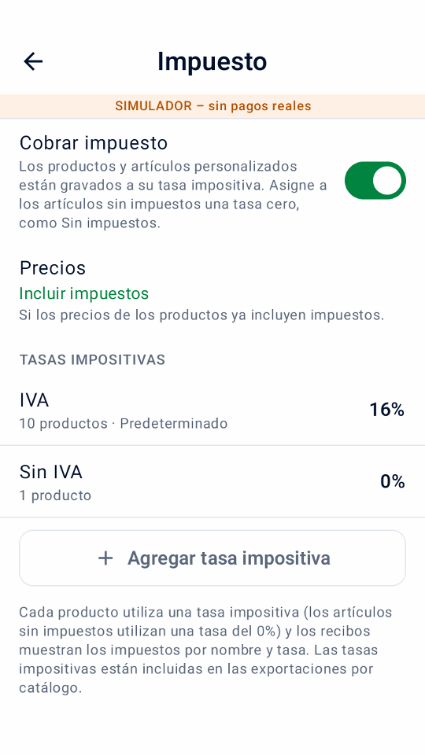
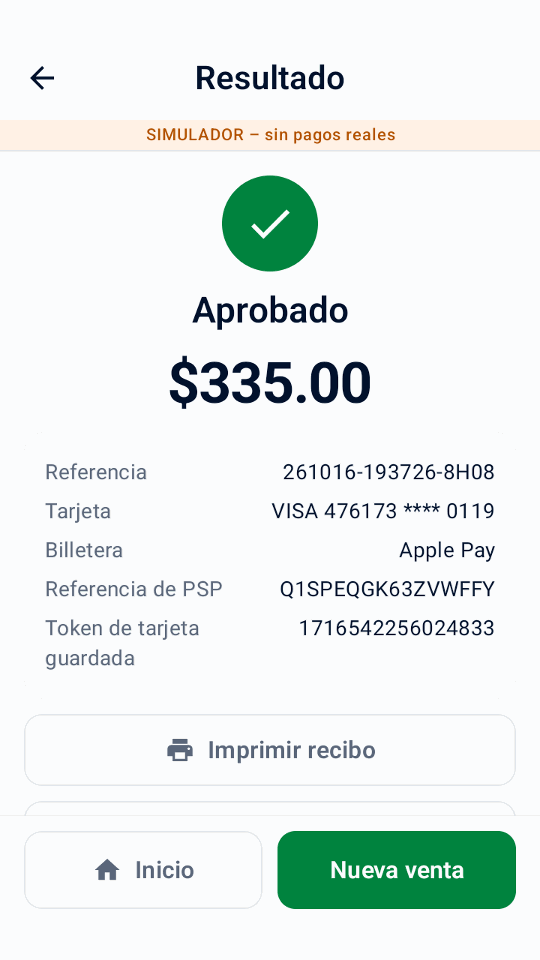

Inicio rápido
Verifique los requisitos previos, instale, conéctese a Adyen y pruebe.
Gratis y de código abierto · se ejecuta en terminales Adyen Android
Mini mPOS funciona directamente en terminales Android de Adyen: selecciona productos, acepta pagos, imprime o envía recibos por correo y reembolsa escaneando el recibo. Todo en un dispositivo, sin caja separada, tablet adicional ni suscripción a la app. ¿Prefieres una tablet o un teléfono? También funciona con tu terminal de pago o Tap to Pay.


Verifique los requisitos previos, instale, conéctese a Adyen y pruebe.
Reciba pagos, reembolse, entregue recibos y cierre el día.
Solucione resultados desconocidos, rechazos, emparejamientos, problemas de red e impresora.
Desde un mostrador hasta muchos dispositivos en tiendas, eventos, entregas y llamadas de servicio: productos, pagos, recibos y reembolsos, sin un back office que ejecutar.
Los terminales compatibles también ofrecen pagos parciales, avisos al comprador, donaciones y ingreso manual de tarjeta. comprobar Capacidades de Adyen para su configuración y compare la actividad local con totales terminales.
Mantenga una lista de productos con precios, categorías, códigos de barras e impuestos. Busque, filtre, escanee un código de barras o ingrese un importe personalizado.
Realiza pagos con tarjeta y wallet con Adyen en el propio terminal, o desde una tablet o teléfono con terminal o Tap to Pay.
Imprima un recibo completo con los datos de su empresa y un código de reembolso QR, envíelo por correo electrónico o compártalo desde una tableta o teléfono.
En su lugar, envíe un enlace de pago: el cliente escanea su código QR o lo abre desde un correo electrónico y paga en la página de pago de Adyen.
Escanee el código QR en el recibo y luego reembolse todo, algunos artículos o un importe. Siempre vinculado al pago original.
Mantenga un depósito para una reserva o alquiler. Cobra el pago más tarde, ajusta el importe o libera la retención.
En una terminal compatible, permita que los compradores elijan una propina antes de pagar o escriba una en un recibo impreso para capturarla más tarde.
Recoge una propina de terminal · Recoge una propina de recibo
Establezca sus propias tasas impositivas, incluya impuestos en los precios o agréguelos al finalizar la compra. Elija cualquier moneda que admita Adyen.
Proteja la configuración con un PIN de administrador y las acciones de seguimiento financiero con un PIN de gerente independiente. Las contraseñas y claves permanecen cifradas.

Toca productos o ingresa un importe.

Añade una referencia y, con el consentimiento, guarda la tarjeta.
Un comprobante con todo, más un código QR.

Escanee el recibo y elija qué reembolsar.


Vea los totales diarios y encuentre ventas, reembolsos y depósitos con unos pocos toques.
Instalado en el terminal, Mini mPOS no necesita otro hardware ni backend para ejecutarse. En tablet o teléfono, funciona con tus terminales o Tap to Pay.


Explore el simulador integrado en un teléfono o emulador Android, sin terminal de pago.
Descargue la aplicación, colóquela en sus terminales a través de su Adyen Área de Clientes (o instálela en una tableta o teléfono) y escanee sus claves desde el asistente de configuración. Nuestro guía lo guiará a través de él.
Leer Inicio rápido · Abra el asistente de configuración · Descarga la aplicación
Ejecútelo directamente en una terminal Adyen Android para realizar un pago todo en uno, o use una tableta o teléfono Android con una terminal de red, terminal en la nube o Tap to Pay. Ver requisitos y opciones de configuración. La impresión necesita una impresora; el escaneo necesita una cámara.
La aplicación es gratuita y de código abierto bajo la licencia MIT. Se siguen aplicando las tarifas de procesamiento de pagos de Adyen.
No. Mini mPOS no está creado, avalado ni respaldado por Adyen. Pruebe su configuración en el entorno TEST de Adyen antes de ponerla en marcha. Ver donde conseguir ayuda para preguntas sobre aplicaciones y Adyen.
No. Los productos, la configuración y el historial permanecen en cada dispositivo. QR transfiere copias de productos y configuración, no historial de pagos ni cambios continuos. Ver dispositivos y datos.
No hay servidor, pero cada configuración de pago real necesita credenciales de Checkout API. Otras claves dependen de dónde van los pagos. Están cifrados en el dispositivo, a cambio de la recomendación del lado del servidor de Adyen. Seguir configuración de conexión y la guía de seguridad allí.